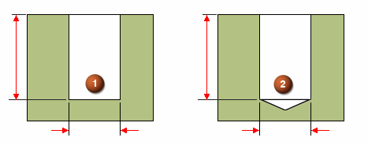
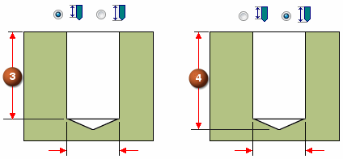

V bottom angles
When you construct a hole using the Finite extent option, you can use the V bottom angle option to specify whether the bottom of the hole is flat (1) or V–shaped (2).

When you set the V bottom angle option, you can also type a value for the bottom angle. The angle you specify represents the total included angle. You can also specify how the finite depth value is measured.
You can specify that the depth dimension is applied to the flat portion of the hole where the V bottom angle begins (3), or that the hole depth dimension is applied to the V bottom of the hole (4).

Learn more
Hole typesHole extents
Threaded holes
Saving commonly used hole parameters
Holes database
Look up more details
Hole Options dialog box (Simple)Hole Options dialog box (Threaded)
Hole Options dialog box (Counterbore)
Hole Options dialog box (Countersink)
Hole Options dialog box (Tapered)
Related Topics
Hole database converterTolerance dialog box